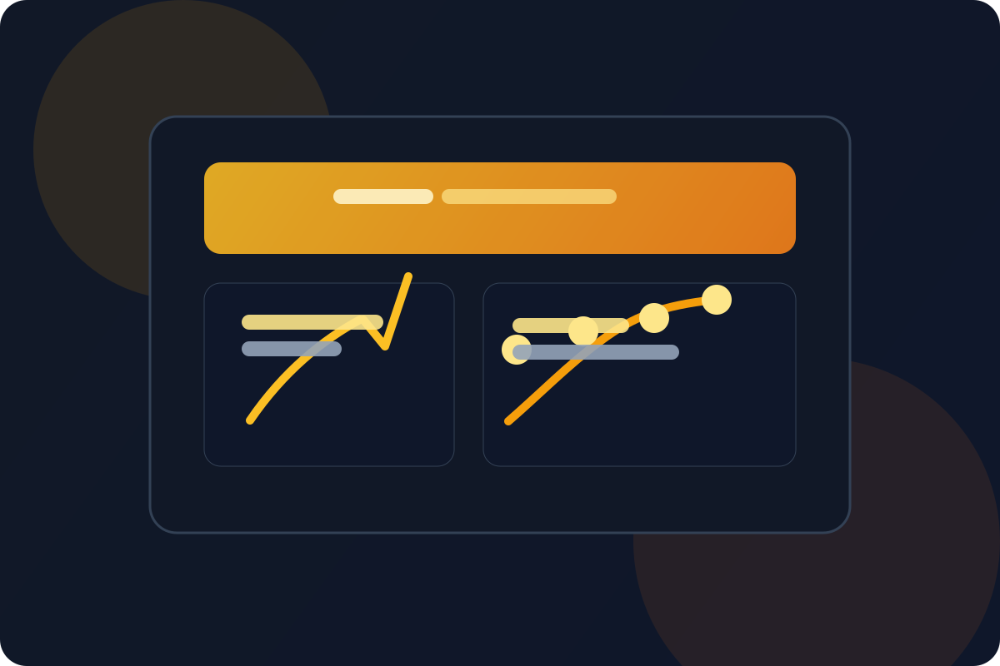

IoT & Embedded
Smart Environment Node
Sistem pemantauan lingkungan yang mampu membaca data sensor dan mengubahnya menjadi pandangan real-time agar kondisi ruangan lebih terkontrol dan aman.
Arduino
C++
Node.js
Dashboard

0/7
Monitoring
0x
Lebih cepat
0%
Ketersediaan
0s
Response time
Overview
Proyek ini menghubungkan perangkat keras ke visualisasi data melalui web dashboard. Sensor membaca kondisi sekitar, data diproses oleh mikrokontroler, lalu disajikan dalam format yang mudah dibaca agar pengguna dapat tahu perubahan lingkungan dengan cepat.
Fitur Utama
- Sistem monitoring sensor untuk suhu, gas, dan gerak
- Hubungan data real-time dari hardware ke dashboard
- Struktur pemrosesan yang siap dikembangkan lebih lanjut
- Solusi yang relevan untuk smart environment atau ruangan
Teknologi Diterapkan
C++
Arduino
Node.js
Web Dashboard